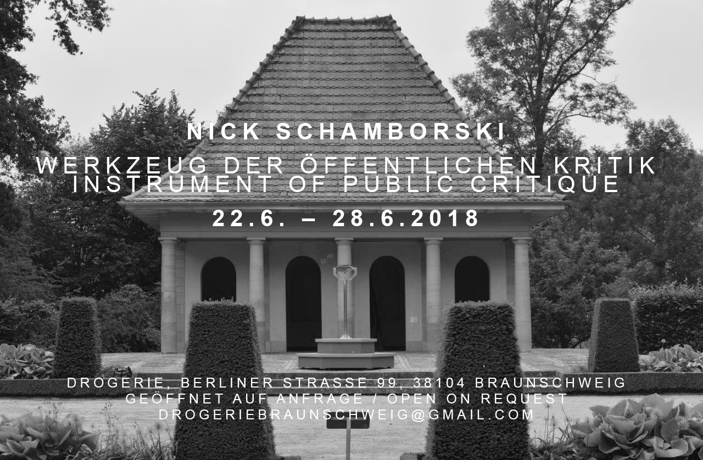

Instrument of Public Critique
2018 · Interactive Sculpture
Instrument of Public Critique is an interactive sculpture by Nickii Schamborski, 2018.



About the work
"The Instrument of Public Critique" invites viewers to reimagine the interplay between digital narratives and physical landscapes. This autonomous sculpture, a hybrid of raw materials and 360 degree video technology offers a poetic juxtaposition: the industrial materiality of aluminum and wood meet the intangible expanse of virtual reality. Peering through its lens, audiences are transported into location-specific VR films. Each location transforms the view from the lens into a stage for reflection on the socio-political and historical undercurrents of the space it occupies.
Zur Arbeit
Instrument der öffentlichen Kritik lädt Betrachter*innen ein, sich das Zusammenspiel zwischen digitalen Erzählungen und physischen Landschaften neu vorzustellen. Diese autonome Skulptur, ein Hybrid aus Rohstoffen und 360-Grad-Videotechnologie, bietet eine poetische Gegenüberstellung: die industrielle Materialität von Aluminium und Holz trifft auf die nicht zu greifende Weite der virtuellen Realität. Beim Blick durch die Linse werden Betrachter*innen in ortsspezifische VR-Filme versetzt. Jeder Ort verwandelt den Blick durch die Linse in eine Bühne für die Reflexion über die soziopolitischen und historischen Unterströmungen des Raums, den er einnimmt.
Details
- Year
- 2018
- Type
- Interactive Sculpture
- Specs
- Aluminium, wood, solar cells, 360° technology, rechargeable battery. Metal Operator: Mika Jetter